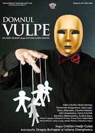
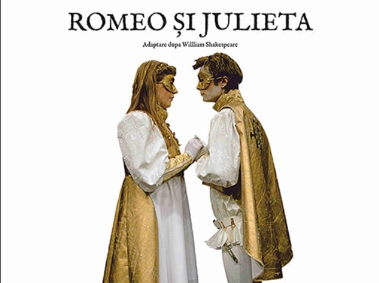

SAPTAMANA ACEASTA IN TEATRE
DOMNUL VULPE
O lume în care unica valoare e banul este o lume sărăcită de oricare alte bucurii legate de frumos, prietenie, iubire... E lumea în care șmecheria, turpitudinea sunt cele care modelează relațiile umane. E lumea pe care ne-o arată domnul Vulpe. O față a lumii în care și noi trăim.
In fiecare seara, Domnul Vulpe o intreba pe sotia lui ce ar dori sa manance: gaini, gaste, rate sau curcani. Dupa dorinta acesteia mergea tiptil si fura de la ferma respectiva mancare pentru ospatul familiei lui. Vulpoiul era mult prea inteligent pentru cei trei fermieri, astfel se folosea de simtul mirosului pentru a-i pacali.
O poveste clasica, ce ar trebui vizualizata de toata lumea.
ROMEO SI JULIETA
Capodopera shakespeariană, povestea îndrăgostiților nevoiți să înfrunte ura viscerală dintre
familiile lor, dar și vicisitudinile sorții, într-o montare pasionată, electrizantă, cu personaje din vremea noastră.
Regizorul Yuri Kordonsky și aleasa distribuție, împreună cu scenografii Dragoș Buhagiar și Ioana Smara
Popescu și coregraful Florin Fieroiu, deschid o excelentă perspectivă modernă asupra tragediei Romeo și Julieta,
lăsând viața și energia debordantă a tinereții să-și afle nestingherit drumul spre inima spectatorilor de orice vârstă.